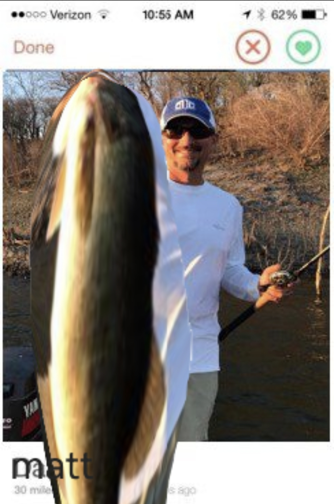

Matt
30 Jan 2026
Mattnorr, also known as Matt, is a very important individual regarding our society. I highly suggest everyone educate themselves on this influential figure by reading this biography.
Fisherman
Matt is a former world record-breaking fisherman. His fishing techniques had such an impact on not only other fishermen, but also every other person in the entire world.
At only 4 days old, Matt caught his first fish. After that he joined the national fishing tournament at 5 years of age. The elite fishing community noticed him a few weeks later. Throughout his life he caught around 400k fish, with the biggest fish being 670 meters tall. He solved world hunger by fishing 400k fish, but that still wasn't enough so he opened 41 fish factories around the world. He achieved all of this before the age of 14.
A real image of Matt's Tinder profile
Fat And Proud
Matt has broken several world records by being huge. And, no, not the muscular kind of huge, but straight up fat.
He has allegedly eaten 320,871 cheeseburgers in one sitting. Some say that the earth orbits around him.
His Final Years
Sadly, all great things must come to an end. In his final years, Matt enjoyed retirement more than anyone ever could.
I already hear you guys thinking, "Well how did he die?" It was the white monsters that eventually caught up to him. He silently passed away in his sleep due to a heart attack. He will always be missed and remembered by his friends, those around him, and the author.